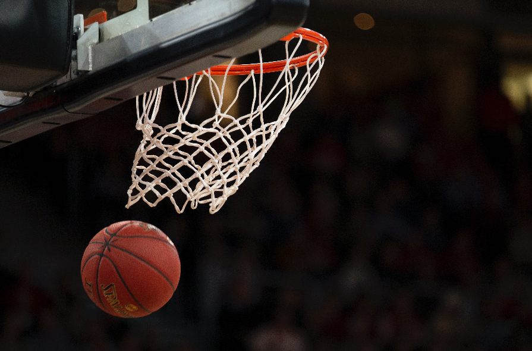

Andra sporter inom föreningen
Basketboll
Fc Barcelona är en stor förening som är inbland i olika sporter. Fotbollen är deras största rubrik och inkomstkälla eftersom det var fotbollen som var grunden till föreningen. När Fc Barcelona började växa som förening började de skapa lag för olika sporter. Basket var en av de sporter de förökade sig med. Basket delen grundades 24 Augusti 1926. De spelade deras första match på ett sport läger som kallades för Sol de Baix. Vid den tiden var inte basket så populär i Catalonia, det djörde fram till 1930. Fc Barcelonas Baskatlag spelade deras första division 1 match under 1940 efter den spanksa kriget. Efter det har Fc Barcelonas Basketlag presterad riktigt bra och är idag ett elit basketlag.
Damlaget
Fc Barcelonas damlag är ett av de bästa i världen. För att bevisa det har de 5 (2011-12, 2012-13, 2013-14, 2014-15, 2019-20) la liga tittlar, 6 (1993-94, 2010-11, 2012-13, 2013-14 , 2016-17, 2017-18) copa de la reina som är stället för Copa Del Ray, 10 (2009, 2010, 2011, 2012, 2014, 2015, 2016, 2017, 2018, 2019) och Spanska super cup(2020). Dessutom har spelade de Champions League final förra säsongen och just ligger de på toppen av ligan. Fc Barcelonas damlag grundades år 1988.
Handboll

Handboll är en till sport Fc Barcelona är inblandad i. Fc Barcelona började med handboll 23 November 1943. Handbollen då brukade spelas på fotboll planer med 11 spelare var. Den version av handboll vi har idag började spridas under 1950. Fc Barcelonas handboll sida har vunnit mest europiska mästerskapet.
Futsal
Futsal är fotboll fast inomhus. På plan ska det vara 5 spelare per lag. Fc Barcelona grundade Futsal sektion i September 1978. Fc Barcelonas futsal lag har varit en av de bästa i Europa den senaste decennium. Futsal fanns inom Fc Barcelona innan det ens fanns en sektione för det. Några tidigare fotbolls professionella spelare kom tillsammans för att köra en form av futsal med Fc Barcelona tröjan. När sporten började blir mer populär i Catalonien bestämde sig Fc Barcelona att skapa ett lag för Futsal.
Inlinehockey
Inlinehockey eller roller hockey som det också kallas blev en sektion inom Fc Barcelona under 1942 men strax efter lades det ner på grund av svårigheter med att få sin egen stadium eller plan. De startade om på nytt efter 5 år sedan det lades ner. 1948 var inlinehockey offecielt inom Fc Barcelona. Hockey laget har vunnit mest Europeiska mästerskaper av alla sektioner inom Fc Barcelona.